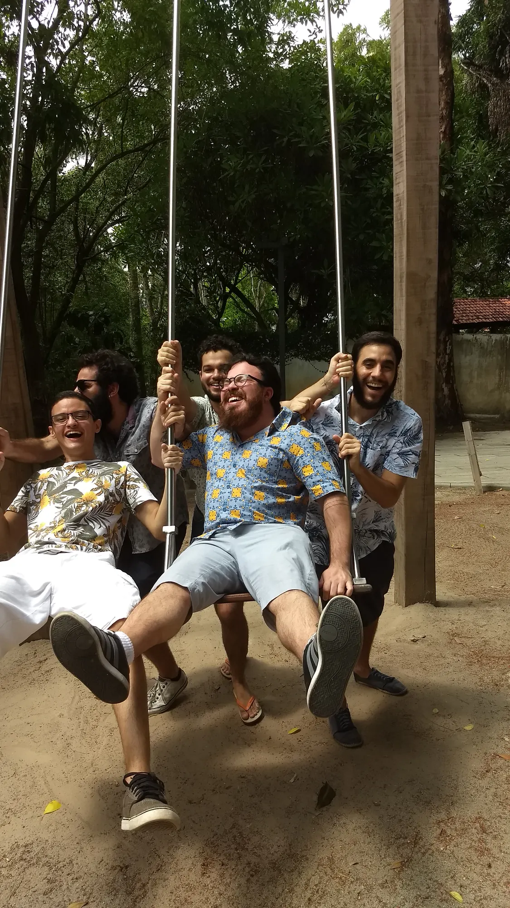
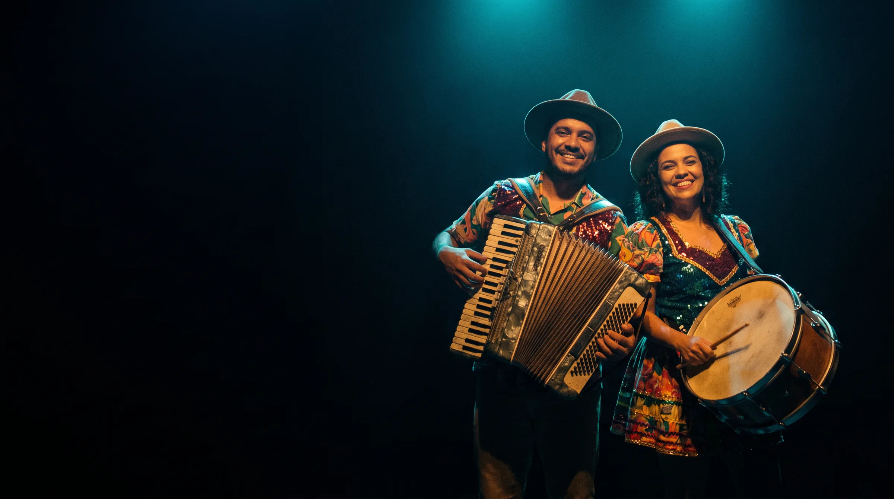
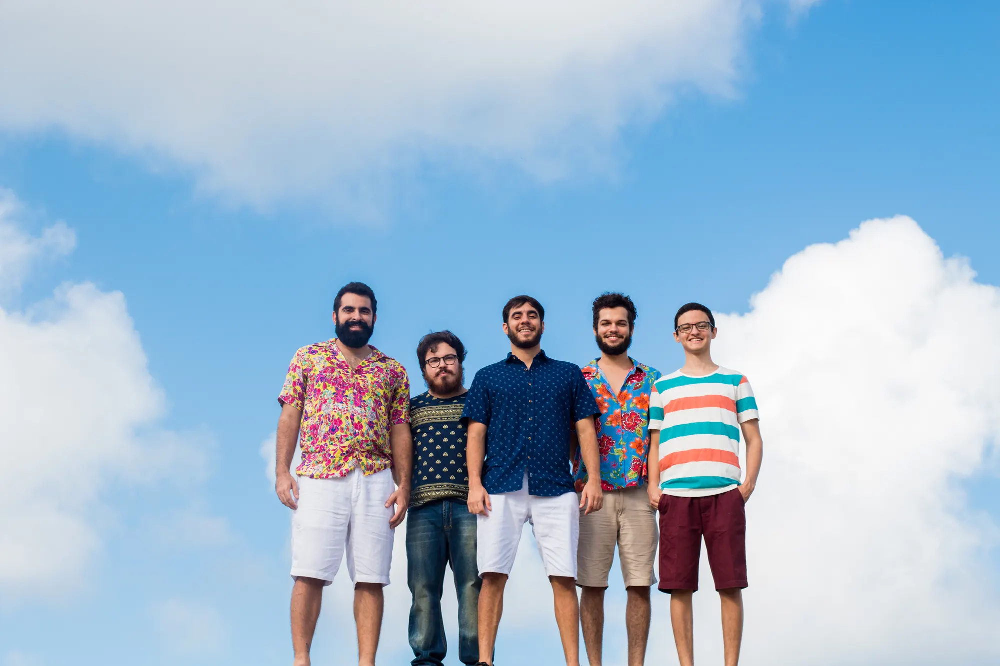
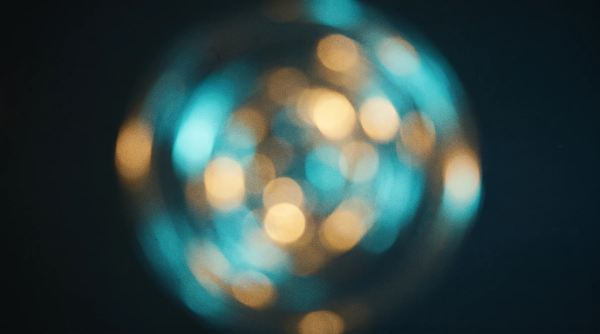

▶ YouTube
Vídeos em breve
Acompanhe o Instagram @tocadocuco para os vídeos mais recentes dos shows.
Banda do Recife desde 2016
Do carimbó paraense ao calypso caribenho — tudo que faz o pé querer se mover.
Leve a Toca do Cuco para o seu evento.
Contratar um show
A Toca do Cuco nasceu em 2016 no Recife com um repertório que atravessa fronteiras: cumbia colombiana, carimbó paraense, lambada, brega nordestino e calypso caribenho. Músicos radicados no Recife que entendem que dançar é um ato coletivo.
Em anos de palco, a banda tocou em festas populares, festivais e eventos privados em Pernambuco e além. O som une gerações e estilos sem pedir licença.
Ver no InstagramVeja como a Toca do Cuco soa e move o público.
▶ YouTube
Acompanhe o Instagram @tocadocuco para os vídeos mais recentes dos shows.
Próximas datas serão divulgadas aqui e no Instagram. Siga @tocadocuco para não perder nenhum show.
Contratar para o seu evento

Para imprensa, produtores e promotores: fotos em alta resolução, biografia completa e rider técnico disponíveis sob solicitação.
Entre em contato pelo Instagram ou pelo formulário abaixo para receber o material.
Solicitar material